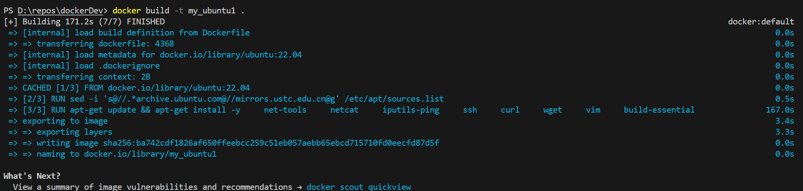
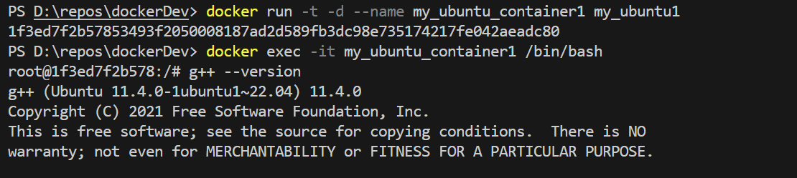

Docker构建自己的镜像
这里使用的Dockerfile是
FROM ubuntu:22.04
# Install Dependencies
ENV DEBIAN_FRONTEND=noninteractive
# Update software sources to Tsinghua mirror
RUN sed -i 's@//.*archive.ubuntu.com@//mirrors.ustc.edu.cn@g' /etc/apt/sources.list
# Install utilities
RUN apt-get update && apt-get install -y \
net-tools \
netcat \
iputils-ping \
ssh \
curl \
wget \
vim \
build-essential
因为原软件源速度过慢，这里使用sed统一更换了软件源地址
build截图如下

使用镜像启动容器:
